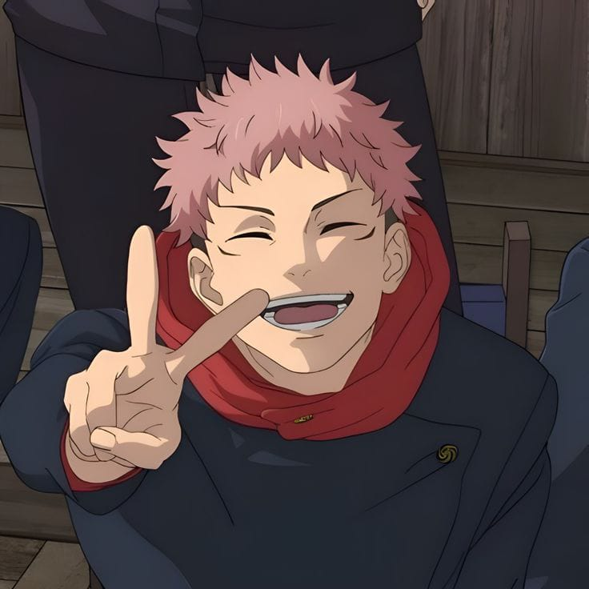
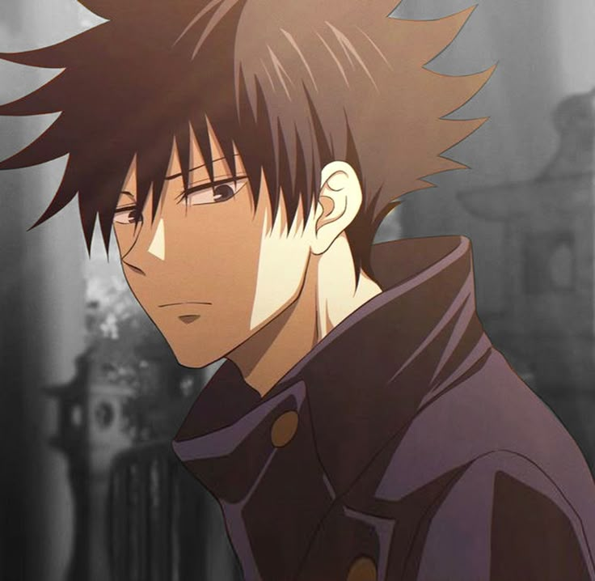
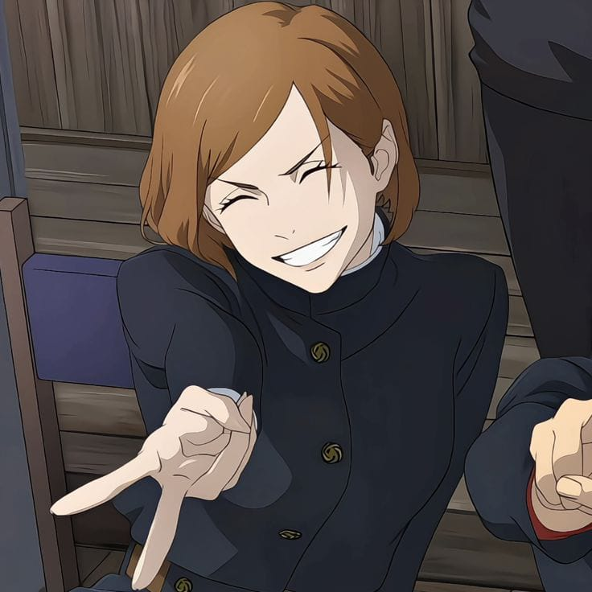
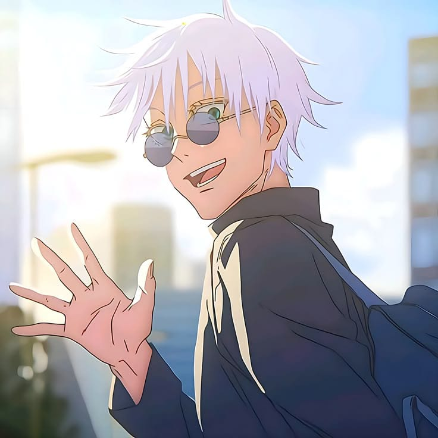
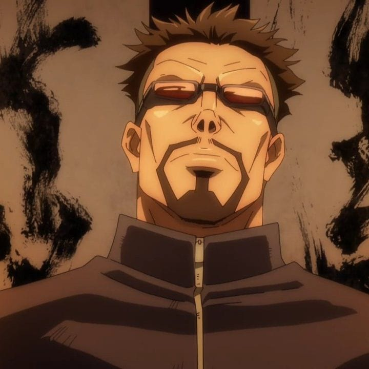
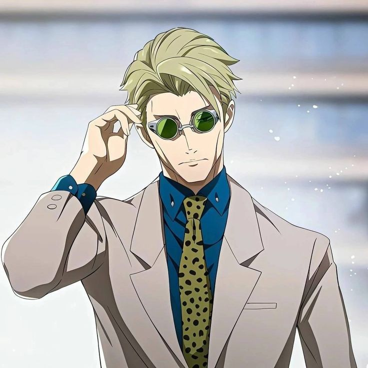

| Itadori Yuuji Karakter utama
|
Megumi Fushiguro Teman sekelas Itadori
|
|---|---|
| Kugisaki Nobara Teman sekelas Itadori
|
Satoru Gojo Walikelas Itadori
|
 Maki Zenin Maki ZeninSenior Itadori
|
 Panda PandaSenior Itadori
|
 Toge Inumaki Toge InumakiSenior Itadori
|
Masamichi Yaga Guru Pembimbing kelas 2
|
 Yuta Okkotsu Yuta OkkotsuKarakter Utama selain Itadori
|
Nanami Kento Guru pembimbing
|
 Mahito MahitoSalah satu musuh utama di serial ini
|
 Hanami HanamiSalah satu musuh utama di serial ini
|